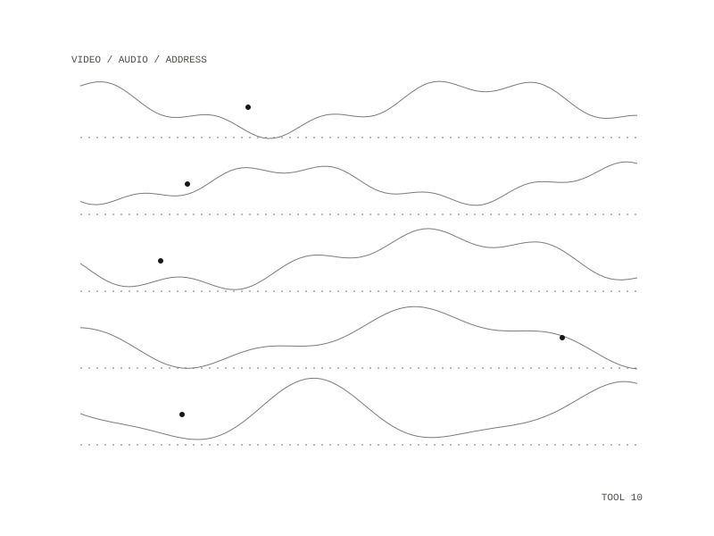

90 / project
videodownload
A command-line script that saves videos, or just their audio, from many video sites
videodownload is a single Python script that downloads videos from many video sites. It takes one or more video or playlist addresses and saves each file as its title followed by its id, in a downloads folder unless another is given.

Options
-q 720caps the height, for example at 720 or 1080 lines--audio-onlykeeps only the sound, as a 192 kbps MP3--subtitlesalso fetches English subtitles, including automatic ones--list-formatsshows the formats on offer and downloads nothing--cookies-from-browser BROWSERuses a local browser's cookies, for age-restricted or members-only videos the user already has access to
Downloads
When separate video and audio are merged, the result is MP4, preferring MP4 video with M4A audio; otherwise it falls back to the best single stream on offer. Each download retries up to 5 times, fetches 4 fragments at once, resumes where it stopped, and skips files that are already there. A failed download prints the reason and exits with an error.
In
one or more video or playlist addresses
one or more video or playlist addresses
Out
video (MP4 where possible), or MP3 audio, with optional English subtitles
video (MP4 where possible), or MP3 audio, with optional English subtitles
Repository: private
All work